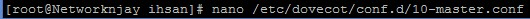

Menuju ke baris "83" pada kata "mydomain =". Uncommand atau buang tanda pagar dan masukkan domain utama dari Mail Server.
. Lalu ke baris "75" pada kata "myhostname =". Uncommand dan masukkan domain dari mail server.
Menuju ke baris "99" pada kata "myorigin =". Uncommand dan isikan string domain kita.
Menuju ke baris "116" pada kata "inet_interfaces". Ganti kata localhost itu dengan "all".
Menuju ke baris "164" dan pada kata "mydestination =". Uncommand dan tambagkan string domain.
menuju ke baris "264" pada kata "mynetworks =". Uncommand dan isikan NETWORK anda.
Lagi, menuju ke baris "419" pada kata "home_mailbox =". Uncommand dan isikan direktori mail nya.
Ke baris "574" pada kata "smtpd_banner =" lalu isikan string hostname dan ESMTP.
. Last.. Menuju ke baris terbawah dari file tersebut. Dan isikan skrip berikut ini....
Lalu kita mulai dan jalankan postfixnya.
Kita daftarkan smtp ke firewall agar client dapat menggunakan protocol smtp lewat server ini. Dan kita restart Firewall nya.
Menuju ke baris "24" pada kata "protocols". Kita uncommand.
. Menuju baris "30" pada kata "listen". Kita uncommand dan hanya mengisi "*". Lalu simpan dan keluar.
Kita edit lagi pada konfigurasi dovecot. yaitu pada 10-auth.conf.
edit pada baris "10" pada kata "disable_plaintext". Kita uncommand dan ganti kata "yes" dengan "no".
menuju kebaris "100" pada kata "auth_mechanism", Kita tambahkan kata "login" diakhir opsi.
Kita edit lagi di file lain. dengan nama file 10-mail.conf
Menuju kebaris "30" pada kata "mail_location". Kita isi dengan direktori "maildir:~/Maildir".
MENUJU KE FILE LAIN. Yaitu file 10-master.conf.
. Menuju kebaris "96" kita akan edit sedikit pada zona ini.
Buka file "10-ssl.conf".
Menuju ke baris "8" pada kata "ssl =". Kita isikan "no"
Restart aplikasi dovecot dan jalankan (enable).
Tambahkan firewall
Menambahkan User Mail
Saya menggunakan aplikasi putty, dan sudah terkoneksi dengan server saya.
LALU KETIK INI.... JANGAN SAMPE SALAH
Lalu kita akan buka email tersebut.
Masukkan user yang tadi telah di kirimi email